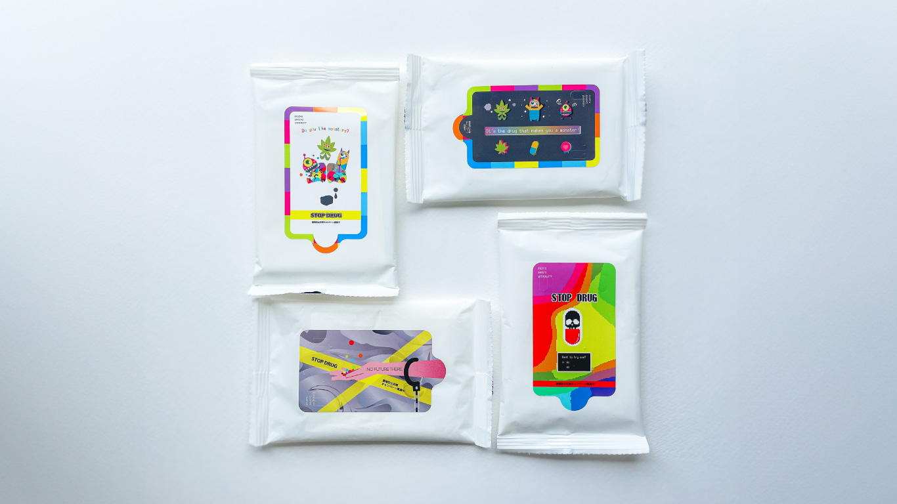

STOP DRUG ｜ 薬物防止対策キャンペーン除菌シート
除菌シートのデザイン
Graphic
Package Design
大学からの要望で、薬物防止対策キャンペーン用の除菌シートのパッケージデザインを手がけました。
要望は「かわいく・恐ろしく」ということでしたので、ドラッグをモチーフにした、かわいらしさと毒っ気を兼ね備えたキャラクターをデザインしました。
さらに、ゲームの選択画面をイメージしたデザインや、未来を象徴する手錠がかけられたデザイン案も提案しました。すべてのデザイン案が採用され、４つの除菌シートが作成されました。
これらの除菌シートは、大学内や香椎駅などで薬物防止キャンペーンの一環として配布され、社会貢献に役立ちました。
大学HP： JR香椎駅で薬物防止キャンペーンを実施
RKBオンライン： 若者に広がる“大麻”大学生が「ＳＴＯＰ ＤＲＵＧ」と呼びかけ、街頭で除菌シートを配る
使用ソフト：Illustrator
制作期間：1ヶ月